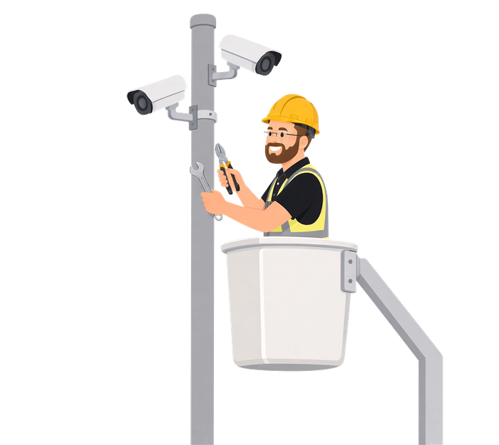
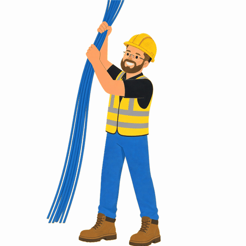

A regional telecom · 2021 – Present
Network Technician
- Customer and network support for a regional telecom.
- Monitor, troubleshoot, and resolve service issues across Alaska.
- Document resolutions and coordinate with field and engineering teams.
Network & Security Systems Technician — Anchorage, Alaska
Fourteen years keeping networks, phones, and security systems running across Alaska.
View my GitHub Connect on LinkedInNetwork technician by day, with a background in telecom installation, access control and CCTV, and small-office system administration. Patient on the phone, careful with documentation, comfortable on a ladder or in a server room.
A regional telecom · 2021 – Present

ATS Alaska · 2019 – 2021

AlcanTel · 2017 – 2019
HDL Engineering Consultants · 2012 – 2017
University of Alaska Anchorage · B.A. Journalism & Public Communications, 2011
Networks & Servers
Security Systems
People & Process
Hiking and mountain biking around Anchorage, community barbecues in the neighborhood, and painting along to old Bob Ross episodes.